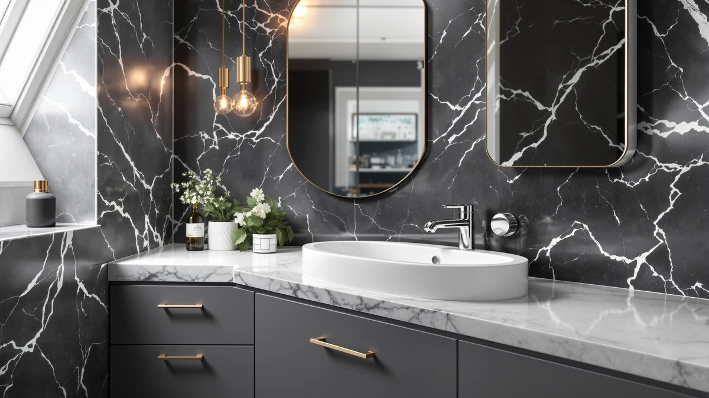

Quick Answer
We compared seven of the best bathroom sinks undermount options for sink configuration, material, and price to find the vanities that pair a true undermount basin with solid everyday storage. The Yaheetech 24.5-Inch Modern Bathroom Vanity is our top pick, thanks to its ceramic undermount basin, compact footprint, and a 4.4-star rating from 252 verified buyers.
Our pick: Yaheetech 24.5 Inch Modern Bathroom, $149.99 Check Price on Amazon
Things to Know Before You Buy
- Undermount means the sink sits beneath the counter. Most vanities in this guide ship with the undermount basin already installed and sealed to the countertop, so counter debris wipes directly into the sink instead of catching on a raised rim.
- Sink configuration varies by size. The 24.5-inch and 36-inch single-sink vanities in this guide suit a half-bath or a one-person routine, while the 72-inch double-sink picks fit two people using the counter at once.
- Not every vanity ships with a faucet. Some combos include a faucet and drain out of the box, while others, like the 30-inch Merax vanity, are pre-drilled for a standard 8-inch widespread faucet you'll need to buy separately.
- Material is mostly MDF or engineered wood at this price. That keeps cost and weight down, but standing water around the sink base should be wiped up promptly to protect the finish. See our bathroom vanity buying guide for more on material tradeoffs.
- Owner ratings aren't published for every listing yet. Only the Yaheetech pick in this guide has a public rating, 4.4 stars from 252 buyers, and we flag where a vanity is new enough that review data hasn't accumulated.
Finding the best bathroom sinks undermount for your vanity means balancing a flush basin design against your budget, your bathroom's plumbing, and how many people need counter space each morning. An undermount sink sits beneath the counter surface, so water and toothpaste splashes wipe straight into the basin instead of pooling against a raised lip, and that small detail makes daily cleanup easier over the life of the vanity. Whether you need a compact single-sink cabinet for a half-bath or a 72-inch double-sink layout for a shared primary bathroom, the right pick comes down to matching sink configuration and storage to how your household uses the space day to day.
We compared seven vanities built around an undermount sink, weighing material, sink configuration, price, and verified owner feedback where it exists. The Yaheetech 24.5-Inch Modern Bathroom Vanity comes out on top for most buyers: its ceramic undermount basin, compact footprint, and $149.99 price hold up against pricier competitors, and 252 verified buyers have rated it 4.4 out of 5 stars. For a primary bathroom that needs two sinks, the LUCKWIND 72-Inch Bathroom Vanity Sink Combo pairs a double undermount solid-surface sink with soft-close hardware at a mid-range price.
This guide covers picks from under $150 to over $1,600, so you can compare a compact single-sink cabinet against a dark walnut double-sink vanity built for a larger primary bathroom. We also flag where a faucet ships included and where you'll need to buy one separately, since that detail changes the real cost of installing any of these best bathroom sinks undermount options. If storage matters as much as the sink, see our full bathroom vanities with sinks guide for more combo options beyond the seven compared here.
Why You Should Trust Us
Ilane Tall covers home and bath products for Best Bathroom Vanities, where she researches vanities, sinks, and small-bathroom upgrades for a US audience. For this guide on the best bathroom sinks undermount options, she and the editorial team compared publicly listed specs, sink configuration, and verified buyer reviews for every vanity under consideration instead of leaning on manufacturer marketing copy. We do not run a fake testing lab, and we don't claim to have installed every cabinet ourselves. Instead, we cross-reference materials, dimensions, and owner feedback so you can choose an undermount sink vanity with a clear picture of what you're buying before it ships.
How We Picked
To build this list of the best bathroom sinks undermount vanities, we started with every vanity in our product database built around an undermount basin, then narrowed the field to listings with a documented material, size, and price. We cut any listing without clear specs, since incomplete information makes a fair comparison impossible. From there, we prioritized a spread of sink configurations and budgets, from the $149.99 single-sink Yaheetech to the $1,614.99 double-sink XWNE, so this guide works whether you're outfitting a guest bathroom or a primary suite (see our vanities under $500 roundup for more budget picks). We also checked which vanities include a faucet and drain versus which require you to source your own, since that detail affects the real cost of each pick.
How We Compared
We are a research-based review site, so we compared these seven bathroom sinks undermount vanities using the specs, pricing, and verified owner reviews published for each listing rather than installing units ourselves. We lined up sink configuration, material, and price side by side to see how each vanity handles daily use, and we read through the verified reviews that exist to flag recurring praise or complaints about hardware and finish. Where reviewers consistently note an issue, such as assembly taking longer than expected, we call it out in that vanity's drawbacks below. For picks too new to have accumulated review data, we say so rather than inventing a rating.
Our Picks

Yaheetech 24.5 Inch Modern Bathroom
What we like
- Ceramic undermount basin wipes clean without a raised rim to catch debris
- Lowest price in this guide at $149.99
- 24.5-inch footprint fits small bathrooms and half-baths
- 4.4-star rating from 252 verified buyers, the only pick here with public review data
Flaws but not dealbreakers
- Single sink only, so it won't suit two people sharing a morning routine
- Ceramic basins can chip if a heavy object is dropped into them
- Ships flat-pack and requires assembly before installation
| Material | MDF / engineered wood |
| Size | 24.5 inch |
The Yaheetech 24.5-Inch Modern Bathroom Vanity is the most affordable pick in this guide and the only one with a public star rating, sitting at 4.4 out of 5 across 252 verified Amazon reviews. Its ceramic undermount basin is sealed beneath the MDF countertop, so the counter edge runs flush over the rim and spilled water or toothpaste wipes straight into the sink rather than pooling against a raised lip. At 24.5 inches wide, it fits a half-bath or a small guest bathroom where a 36-inch or larger cabinet wouldn't leave enough walking room.
Reviewers consistently note that the modern cabinet style and neutral finish match a range of bathroom decors without looking out of place. Owners report that assembly takes some time since the cabinet ships flat-pack, but the hardware and instructions are straightforward enough for a weekend install. If you need a second sink for a shared bathroom, the LUCKWIND or eclife double-sink picks below are a better fit than adding a second Yaheetech unit.

eclife 36" Floating Bathroom Vanity
What we like
- Floating wall-mount design opens up visible floor space
- Undermount white sink made from SMC material, which resists stains and scratches
- Ships with a faucet and drain included, so there's less to buy separately
- Two fluted drawers add storage without a bulky cabinet base
Flaws but not dealbreakers
- No public owner rating yet to confirm long-term durability
- Floating installation needs wall blocking, which adds to install complexity
- Storage is limited to two drawers, with no lower cabinet doors
| Material | MDF / engineered wood |
| Size | 36 Inch |
The eclife 36-Inch Floating Bathroom Vanity mounts to the wall instead of resting on the floor, which makes the bathroom feel more open and simplifies cleaning underneath. Its undermount white sink is molded from SMC, a high-hardness composite eclife also uses on its larger combos, and the vanity ships with a matching faucet and drain already included, so you aren't sourcing hardware separately after checkout.
At $249.99, it costs about $100 more than the Yaheetech pick above, and that premium buys the floating profile plus the included faucet kit. The two fluted drawers hold daily essentials, though buyers who need a lower cabinet for towels or cleaning supplies should look at one of the freestanding eclife combos further down this list instead. Because this listing is newer to our database, it doesn't yet have a public star rating, so we can't confirm long-term hardware wear the way we can with the Yaheetech.

XWNE 72-inch Dark Walnut Bathroom
What we like
- 72-inch double-sink layout lets two people use the counter at the same time
- Dark walnut finish suits a primary bathroom rather than a guest bath
- Six drawers plus four soft-close doors for towels and toiletries
- Stone countertop and backsplash included
Flaws but not dealbreakers
- At $1,614.99, it's the most expensive pick in this guide by a wide margin
- 72-inch footprint needs a large bathroom wall to fit comfortably
- No public owner rating yet to confirm long-term performance
| Material | Diatomaceous earth |
| Size | 72 inch |
The XWNE 72-Inch Dark Walnut Bathroom Vanity is built for a primary bathroom shared by two people, with a double-sink layout, a stone countertop and matching backsplash, and six drawers split across four soft-close doors. It's the largest and priciest pick in this comparison, and the dark walnut finish gives it a heavier, more furniture-like look than the painted MDF combos elsewhere in this guide.
A built-in outlet cutout inside the cabinet keeps hairdryers and electric toothbrushes charged without a cord running across the counter, a detail that's easy to overlook until you're missing it. Because this listing hasn't accumulated verified reviews in our database yet, we can't point to owner feedback on long-term wear, so budget-conscious shoppers who don't need the full 72-inch double-sink footprint may find better value in the LUCKWIND or eclife 72-inch combos below.

LUCKWIND 72" Bathroom Vanity Sink
What we like
- Double undermount solid-surface sinks for two people to use at once
- Soft-close hinges and a water-saving faucet included
- Moisture-resistant MDF construction with a reinforced base
- Costs roughly $765 less than the XWNE 72-inch double-sink pick above
Flaws but not dealbreakers
- Taupe is the only finish available
- No public owner rating yet
- Still needs a 72-inch wall, so it won't fit a compact bathroom
| Material | MDF / engineered wood |
| Size | 72"-Dual Sink |
The LUCKWIND 72-Inch Bathroom Vanity Sink Combo is the mid-priced double-sink option in this guide, pairing two undermount solid-surface basins with soft-close hinges and a water-saving faucet at $849.99, well below the XWNE's $1,614.99. The moisture-resistant MDF cabinet sits on a reinforced base built to handle a bathroom's humidity better than standard particleboard.
Two drawers and two full-size cabinets give each person their own storage zone, which cuts down on morning clutter for couples or roommates sharing one vanity. The taupe finish is the only color offered, so buyers set on a specific palette should compare it against the dark walnut XWNE or the white-and-black eclife combo before ordering. As with several other 72-inch picks here, this listing is new enough that it hasn't built up verified owner reviews yet.

eclife 72" Bathroom Vanities Sink
What we like
- Double undermount white sinks with a matte black faucet and drain included
- Soft-close hinge system throughout
- Decorative wave-line drawer front adds visual detail
- Two shelves plus two drawers for storage
Flaws but not dealbreakers
- At $999.99, it costs more than the LUCKWIND double-sink pick above
- No public owner rating yet
- Painted MDF surface needs prompt cleanup around standing water
| Material | MDF / engineered wood |
| Size | 72 Inch-Dual |
The eclife 72-Inch Bathroom Vanities Sink Combo pairs two undermount white sinks with a matte black faucet and drain already installed, so there's no separate faucet purchase to plan for. A decorative wave-line pattern runs across the drawer fronts, giving it a more detailed look than the flatter panels on the LUCKWIND combo, and the whole cabinet uses a soft-close hinge system to keep doors and drawers from slamming.
At $999.99, it sits between the LUCKWIND and XWNE on price, and it's a reasonable middle ground if you want the matte black hardware finish without stretching to the XWNE's stone countertop and walnut cabinet. Two shelves and two drawers keep storage straightforward rather than maximized, so households with a lot of bathroom gear may prefer the six-drawer XWNE despite its higher price. This listing hasn't accumulated verified reviews in our database yet, so we can't cite owner feedback on long-term hinge or faucet performance.

eclife 36" Bathroom Vanities with
What we like
- Undermount white single sink with a matching matte black faucet included
- DTC adjustable soft-close hinges prevent door slamming
- Thickened MDF panels for added durability
- Classic drawer-and-door layout with dedicated storage zones
Flaws but not dealbreakers
- Natural finish shows water spots more visibly than the darker eclife and XWNE options
- No public owner rating yet
- Single sink only, so it won't suit two people sharing the counter
| Material | MDF / engineered wood |
| Size | 36" Single |
The eclife 36-Inch Bathroom Vanities with Sink Combo brings the same undermount sink and matte black faucet pairing as its 72-inch sibling down to a single-sink, 36-inch footprint at $309.99. The natural wood-tone finish is lighter than the white-and-black or dark walnut options elsewhere in this guide, and the cabinet uses DTC adjustable hinges so doors close gently instead of slamming.
Thickened MDF panels are used throughout for added rigidity, and the drawer-and-door layout splits storage into distinct zones for towels versus daily toiletries. Because the natural finish is lighter, water spots and splashes show up more readily than on the eclife 72-inch's white-and-black surface, so a quick wipe-down after use keeps it looking newer for longer. Like most of the 72-inch picks in this guide, this listing hasn't built up verified owner reviews yet.

30" Wood Bathroom Vanity Cabinet
What we like
- Undermount ceramic sink top pre-drilled for a standard 8-inch widespread faucet
- Solid wood support legs paired with high-grade MDF panels
- Three soft-close drawers plus one cabinet door with an adjustable shelf
- Open-back design simplifies plumbing hookup
Flaws but not dealbreakers
- Faucet not included and must match the pre-drilled 8-inch widespread spacing
- 30-inch size suits smaller bathrooms rather than a primary suite
- No public owner rating yet
| Material | MDF / engineered wood |
| Size | 30"-Right Door |
The 30-Inch Wood Bathroom Vanity Cabinet from Merax pairs an undermount ceramic sink top with solid wood support legs, a construction detail none of the other picks in this guide use. The natural wood finish suits a Scandinavian, farmhouse, or minimalist bathroom, and the open-back cabinet design leaves the plumbing area accessible, which simplifies both installation and future repairs.
Three soft-close drawers sit above a single cabinet door with an adjustable interior shelf, giving you a mix of quick-access and enclosed storage in a compact 30-inch width. The ceramic sink top is pre-drilled for three faucet holes at standard 8-inch widespread spacing, so you'll need to buy a compatible faucet separately rather than assuming one is included. At $349.00, it undercuts every double-sink pick in this guide while still offering the solid-wood build the MDF-only options don't.
Quick Comparison
| Product | Material | Price | Rating | Best for | Get it |
|---|---|---|---|---|---|
| Yaheetech 24.5 Inch Modern Bathroom | MDF / engineered wood | $149.99 | 4.4 | Best budget undermount sink | View on Amazon → |
| eclife 36" Floating Bathroom Vanity | MDF / engineered wood | $249.99 | 4 | Best floating design | View on Amazon → |
| XWNE 72-inch Dark Walnut Bathroom | Diatomaceous earth | $1,614.99 | 4 | Best for primary baths | View on Amazon → |
| LUCKWIND 72" Bathroom Vanity Sink | MDF / engineered wood | $849.99 | 4 | Best dual-sink value | View on Amazon → |
| eclife 72" Bathroom Vanities Sink | MDF / engineered wood | $999.99 | 4 | Best matte-black faucet | View on Amazon → |
| eclife 36" Bathroom Vanities with | MDF / engineered wood | $309.99 | 4 | Best natural finish | View on Amazon → |
| 30" Wood Bathroom Vanity Cabinet | MDF / engineered wood | $349.00 | 4 | Best solid-wood budget pick | View on Amazon → |
The Competition
Several undermount sink vanities that regularly show up in searches for the best bathroom sinks undermount didn't make our final list. We passed on listings without a documented material, size, or price, since incomplete specs make it impossible to compare fairly against the seven vanities above. We also excluded a number of drop-in sink vanities marketed loosely alongside undermount options, since a drop-in basin sits on top of the counter rather than beneath it and doesn't deliver the flush, easy-wipe edge buyers searching for an undermount sink are after. Finally, we skipped several near-identical eclife listings that differ only in drawer-pull color or minor cosmetic trim, since they offered no meaningful difference in sink configuration, material, or price over the eclife combos already included here. For most bathrooms, the Yaheetech 24.5-Inch Modern Bathroom Vanity remains our top pick among the best bathroom sinks undermount options compared here, though the six runners-up above cover a wider range of sink configurations, finishes, and price points.